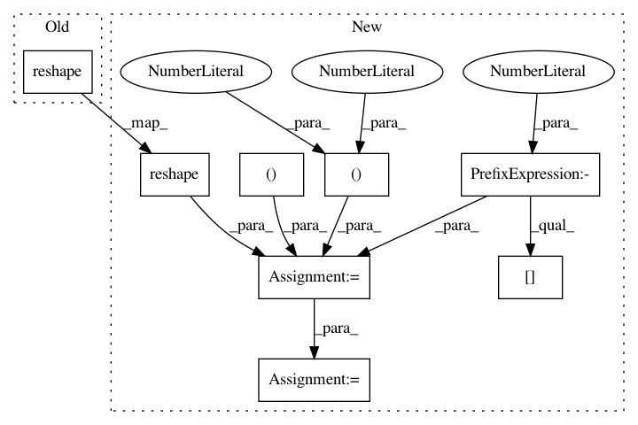

72caa3677f5f9cc09ed98324c76454c38a7e8098,lib/metric.py,MaskLogLossMetric,update,#MaskLogLossMetric#,137
Before Change
def update(self, labels, preds):
pred = preds[self.pred.index("mask_preds")].asnumpy().reshape(-1)
weights = preds[self.pred.index("mask_weights")].asnumpy().reshape(-1)
labels = preds[self.pred.index("mask_labels")].asnumpy().reshape(-1)
valid_inds = np.where(weights>0)[0]
labels = labels[valid_inds]
After Change
// label (b, p)
label = label.asnumpy().astype("int32").reshape((-1))
// pred (b, c, p) or (b, c, h, w) --> (b, p, c) --> (b*p, c)
pred = pred.asnumpy().reshape((pred.shape[0], pred.shape[1], -1)).transpose((0, 2, 1))
pred = pred.reshape((label.shape[0], -1))
// filter with keep_inds
keep_inds = np.where(label != -1)[0]
label = label[keep_inds]
cls = pred[keep_inds, label]
cls += 1e-14
cls_loss = -1 * np.log(cls)
cls_loss = np.sum(cls_loss)
self.sum_metric += cls_loss
self.num_inst += label.shape[0]
class RPNLogLossMetric(mx.metric.EvalMetric):
def __init__(self):
super(RPNLogLossMetric, self).__init__("RPNLogLoss")
In pattern: SUPERPATTERN
Frequency: 3
Non-data size: 8
Instances
Project Name: mahyarnajibi/SNIPER
Commit Name: 72caa3677f5f9cc09ed98324c76454c38a7e8098
Time: 2018-06-04
Author: mahyarnajibi@gmail.com
File Name: lib/metric.py
Class Name: MaskLogLossMetric
Method Name: update
Project Name: acoular/acoular
Commit Name: 687bf671460e950f7430296731ba2957da17d9c1
Time: 2020-07-02
Author: s.jekosch@tu-berlin.de
File Name: acoular/grids.py
Class Name: PolySector
Method Name: contains
Project Name: acoular/acoular
Commit Name: 687bf671460e950f7430296731ba2957da17d9c1
Time: 2020-07-02
Author: s.jekosch@tu-berlin.de
File Name: acoular/grids.py
Class Name: RectGrid
Method Name: indices